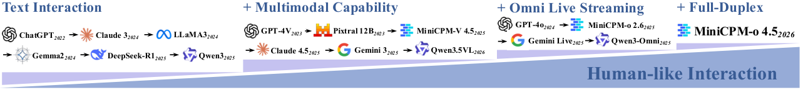
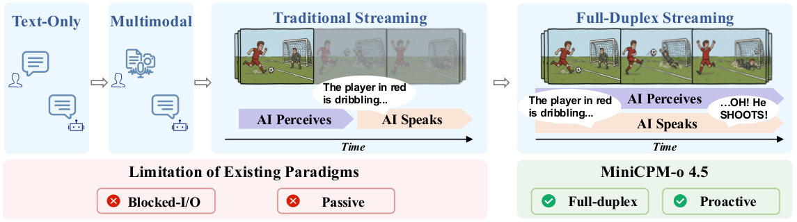
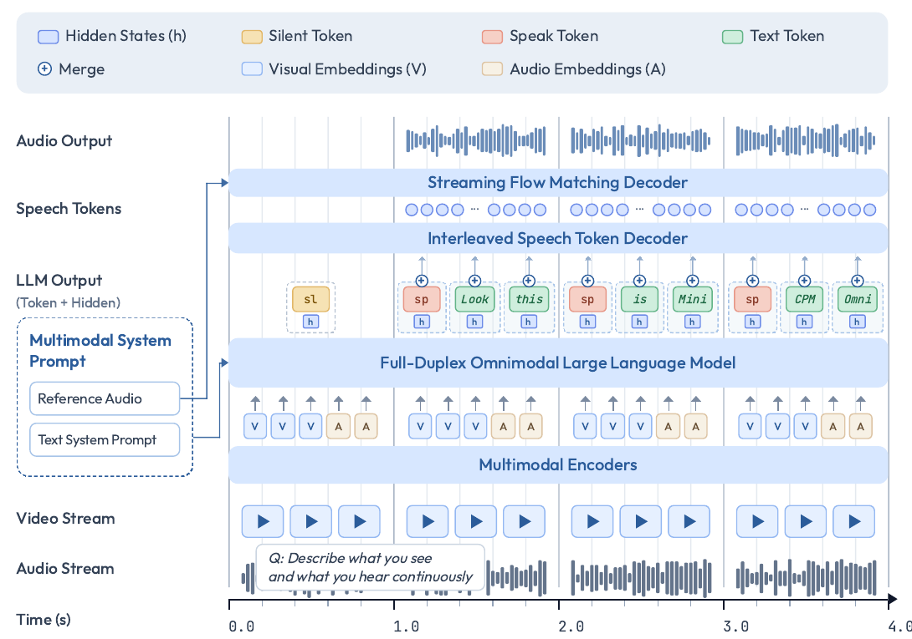
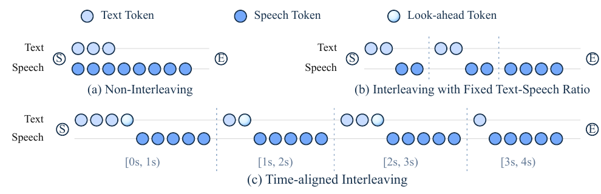
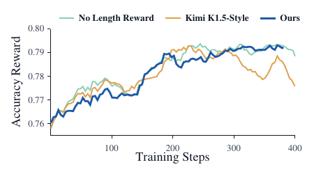
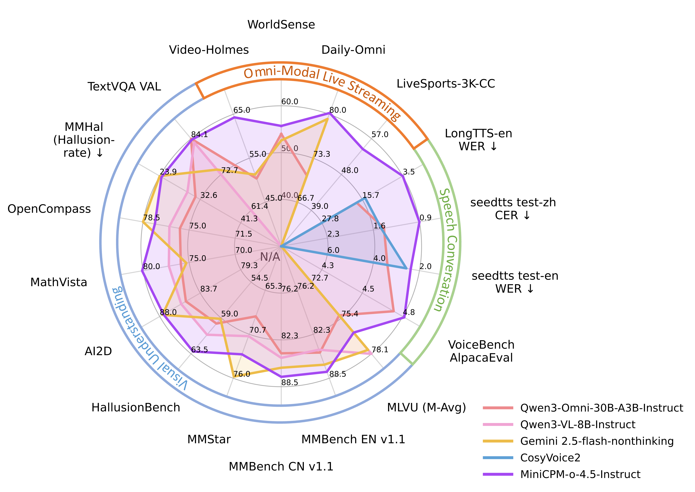

MiniCPM-o 4.5：实时全双工全模态交互 —— 论文总结¶
原文：MiniCPM-o 4.5: Towards Real-Time Full-Duplex Omni-Modal Interaction（arXiv:2604.27393v1，cs.CL，2026-04-30，正文 15 页 + 附录）
快捷入口：摘要页 ｜ PDF ｜ HTML 全文 ｜ TeX 源码 ｜ DOI ｜ HF Papers 页
作者：Junbo Cui、Bokai Xu、Chongyi Wang、Tianyu Yu 等 35 人；通讯作者 Maosong Sun*、Zhiyuan Liu*、Yuan Yao*
机构：MiniCPM-o Team, OpenBMB（清华大学 NLP 实验室 + 面壁智能）
开源：HF 权重 openbmb/MiniCPM-o-4_5（Apache-2.0）｜ GitHub OpenBMB/MiniCPM-o ｜ Cookbook ｜ PyTorch 全双工 Web Demo ｜ 在线 Demo ｜ 全双工 Casebook ｜ 语音 Casebook
时间线：模型权重 2026-02 已发布（模型卡 News 写 2026.02.06 开源了本地实时 Web Demo），技术报告晚了约 3 个月才挂上 arXiv。所以这篇报告更像“对已发布模型的事后说明”，很多工程细节（数据量、超参）没有给。
一、一句话概括¶
把 MiniCPM-V 4.5 的视觉能力、Whisper-Medium 音频编码器、Qwen3-8B 主干、一个 0.3B 的语音 token 解码器和 CosyVoice2 式流匹配声码器端到端连成一个 9.34B 模型，再用 Omni-Flow（按 1 秒切片的时分复用）把“视觉流、环境音频流、输出流”排到同一条时间轴上：每秒先读新进来的画面和声音，再决定“这一秒说不说、说什么”。说话时用 TAIL（时间对齐交错）控制每秒生成多少文本，让语音播放不落后于模型的最新状态。结果是：一个 9B 模型能边看、边听、边说，还能主动开口（提醒、实况解说），INT4 量化后 11 GB 显存可跑；视觉能力接近 Gemini 2.5 Flash，全模态理解和语音合成超过 Qwen3-Omni-30B-A3B。
二、要解决的问题（§1，Figure 2、Figure 3）¶

Figure 2：作者眼中的交互范式演进：纯文本 → 多模态理解 → 全模态实时流（GPT-4o、Gemini Live、Qwen3-Omni）→ 全双工（MiniCPM-o 4.5）。
作者认为，现在多模态大模型的瓶颈已经不是“支持多少模态”或“延迟多低”，而是交互范式本身，具体有两个问题：
| 问题 | 含义 | 后果 |
|---|---|---|
| 感知与回应交替进行（Blocked I/O） | 模型要么在听/看，要么在说，二者轮流 | 说话途中看到的新画面、听到的新声音无法用来及时调整正在说的内容 |
| 被动响应（Passive） | 只有用户显式提问才会开口 | 不能根据场景变化主动提醒、主动解说 |

Figure 3：左边是传统流式：模型先感知、再说话，看球赛时只能说出“红衣球员在带球……”，等它说完，射门已经发生了。右边是 MiniCPM-o 4.5：边说边看，能在射门那一刻插一句“哦！他射门了！”。
作者给出的解决方向：(1) 感知和回应在 token 级别持续耦合，听、看、说、写并行；(2) 行为由上下文驱动，模型自己决定什么时候开口。
贡献声明（§1 末尾）：第一个全双工全模态 LLM（9B，边缘设备 12 GB 以内可跑）；视觉逼近 Gemini 2.5 Flash，全模态与语音合成超过 Qwen3-Omni-30B-A3B；提出 Omni-Flow 框架。同时仍保留传统轮次模式，可以在全双工和轮次之间切换（模型卡里对应 model.as_duplex() / as_simplex()）。
三、端到端全模态架构（§2，Figure 4，附录 A / Table 13）¶

Figure 4：底部是视频流和音频流，按秒切块后经编码器变成视觉嵌入 V 和音频嵌入 A，送入全双工 LLM。LLM 每秒先输出一个控制 token（sl = 静默 / sp = 说话），说话时再输出文本 token。每个文本 token 的隐状态 h 与 token 本身合并后送进交错式语音 token 解码器，再由流式流匹配解码器根据系统提示里的参考音频合成波形。
3.1 组件与参数（Table 13）¶
| 组件 | 具体模型 | 参数量 | 关键配置 |
|---|---|---|---|
| 视觉编码器 | SigLIP ViT（SigLIP） | 417.8M | 27 层，隐藏维 1152，patch 14×14 |
| 视觉重采样器 | Perceiver 式 resampler（沿用 MiniCPM-V） | 88.9M | 64 个查询 token，维度 4096 |
| 音频编码器 | Whisper Medium encoder，按块流式（WeNet 式 chunk） | 307.2M | 24 层，80 维 Mel，输出 50 帧/秒 |
| 音频投影器 | 两层 MLP + ReLU | 21.0M | 1024→4096→4096，5× 时间压缩 → 10 token/秒 |
| LLM 主干 | Qwen3-8B | 8,189.2M | 36 层，GQA（32 头 / 8 KV 头），上下文 40,960 |
| 主干→语音解码器投影 | 两层 MLP + ReLU | 10.5M | 4096→768→768 |
| 语音 token 解码器 | Llama 结构小模型 | 116.8M（文本嵌入）+ 188.8M（Transformer） | 20 层，隐藏维 768，上下文 4096 |
| 语音 token | CosyVoice 的 S3 token | — | 单码本，6,562 个码，25 token/秒 |
| 声码器 | 流式流匹配解码器（CosyVoice 2 式） | 未计入 | 根据系统提示里的参考音频决定音色 |
可学习参数合计 9.34B（我按 Table 13 逐项相加得 9,340.2M，与原文一致）。流匹配声码器不在这个数里。
各部分的设计要点：
- 视觉（§2 “Visual Encoding”）：用 LLaVA-UHD 的切片策略处理任意长宽比高分辨率图，每个切片先编码成 1024 个 token，再压缩成 64 个，压缩比 16×（常见做法是 4×）。全双工模式下最大分辨率只有 448×448，也就是每帧只有 1 个切片、64 个 token；其他模式最高 2240×2240。
- 音频：Whisper 编码器输出 50 帧/秒，MLP 投影器再压缩 5 倍，最终 10 token/秒进入 LLM。
- 文本解码：LLM 只生成文本，全双工时每秒只需解码 3–4 步（大致是人的语速）。作者特意和“让主干直接生成语音 token（约 25 个/秒）”的做法（如 Step-Audio 2、Qwen2.5-Omni）对比：那样做效率低，语言能力也容易退化（引 Analyzing mitigation strategies for catastrophic forgetting）。
- 语音 token 生成：每个文本 token 送进语音解码器时，会把它在 LLM 里的隐状态（经 MLP 变换）加到 token 嵌入上。作者的解释是：韵律、语气这类决策已经由 LLM 隐状态编码好了，小解码器只需要专心做“发音建模”。
- 音色：系统提示是“多模态”的，可以同时包含文本和一段参考音频，声码器按参考音频克隆音色。这就是模型卡里说的 voice cloning / role play。
整体数据流（我根据 §2–§3 和 Figure 4 整理）：
flowchart LR
V[摄像头 1 帧/秒<br/>≤448×448] --> SIG[SigLIP + Resampler<br/>64 token/帧]
A[麦克风音频] --> WH[Whisper-M 流式块<br/>50 帧/秒] --> PJ[MLP 5× 压缩<br/>10 token/秒]
SYS[多模态系统提示<br/>文本 + 参考音频] --> LLM
SIG --> LLM[Qwen3-8B 主干<br/>每 1 s 一组：V ; A ; 输出]
PJ --> LLM
LLM -->|控制 token sl / sp| CTRL{这一秒说不说}
CTRL -->|sp：文本 token + 隐状态 h| STD[语音 token 解码器 0.3B<br/>TAIL 交错，S3 25 token/秒]
STD --> FM[流式流匹配声码器]
SYS -.参考音频.-> FM
FM --> OUT[输出语音 24 kHz]注意：模型自己说出的语音不会回灌进 LLM。输出流里只有文本 token（和控制 token），所以 LLM 历史开销很小；但如果机器人扬声器的声音被麦克风收进来，它会作为“环境音频”再进入模型，论文没有讨论回声问题（见第十节）。
四、Omni-Flow：统一的流式框架（§3）¶
核心思想借自通信里的时分复用（TDM）：把连续的交互切成长度为 \(t\) 的时间窗，每个窗口里先“吃进”新信号，再产生下一段输出。\(t\) 足够小，感知和回应在时间上就足够紧密，近似全双工。
4.1 三条时间对齐的流（§3.1）¶
| 流 | 内容 |
|---|---|
| env-visual | 环境的实时视觉观测 |
| env-audio | 环境声学场景，用户语音也在这里面 |
| out-stream | 助手的文本和语音输出 |
这一抽象的关键在于：用户请求不再是特权的“user 角色”，而只是环境音频里的一部分；模型的输出也不再需要用户请求来触发。模型处在一个一直开着的多模态环境里，自己决定“说什么”以及“要不要说、什么时候说”。
4.2 统一序列化（§3.2）¶
第 \(k\) 个时间块里，视觉 token 为 \(v_k\)，音频 token 为 \(a_k\)，输出 token 为 \(o_k\)（不该说话时，\(o_k\) 只有一个特殊的 [listen] token）。把它们组成一组：
再把所有组依次拼接成一条序列，交给普通的因果语言模型：
每个块内先感知、后输出，所以每个输出都以最新观测为条件。由于模型每个窗口都要决定输出与否，主动行为自然出现，也不再依赖外部 VAD（作者引了 Silero VAD 作为被替代的对象）。模型卡的描述是：LLM “以 1 Hz 的频率决定说还是不说”。
4.3 设计权衡与消融（§3.3，Table 1）¶
作者在三个维度上做了消融：
- 时间粒度：块长 1.0 s / 0.2 s / 0.1 s；
- 边界显式性：相邻组之间要不要插特殊分隔 token；
- 控制方式：LS（Listen-Speak）= 先预测一个二元的 listen/speak 控制 token，再生成内容；LT（Listen-Text）= 在同一个输出空间里直接预测
[listen]或普通文本 token。
| 块长 | 边界 | 控制 | AdvBench | AlpacaEval | IFEval | SDQA | MMLU |
|---|---|---|---|---|---|---|---|
| 1.0 s | 显式 | LS | 0.98 | 3.56 | 0.29 | 0.36 | 0.65 |
| 1.0 s | 显式 | LT | 0.92 | 3.60 | 0.24 | 0.35 | 0.56 |
| 1.0 s | 隐式 | LT | 0.96 | 3.31 | 0.22 | 0.28 | 0.45 |
| 0.2 s | 显式 | LS | 0.81 | 1.22 | 0.10 | 0.09 | 0.45 |
| 0.1 s | 显式 | LS | 0.67 | 2.40 | 0.10 | 0.13 | 0.32 |
作者的三个结论：
- 块长决定“延迟—容量”的权衡：块越短，反应越及时，但每个块里用来做决策和生成的建模预算越少；太短时模型拿不到足够信息做稳定决策，性能大幅下降。1.0 s 是最好的折中。
- 显式边界一直有益：把“新观测”和“新输出”的分界明确标出来，能减轻模型负担。
- 控制和内容分开更稳：LS 优于 LT，说明“要不要说”和“说什么”应该解耦，混在一步预测里更难学。
我的读法：这张表的指标看起来是 VoiceBench 的子集（VoiceBench 正好包含 AlpacaEval、IFEval、SD-QA、MMSU、AdvBench），即语音问答质量，而不是全双工行为本身（轮次切换、打断、延迟）。表里的 “MMLU” 很可能是 VoiceBench 的 MMSU【推断】。论文没说明评测协议，也没有报任何延迟数字，所以“1.0 s 最佳”是在问答质量意义下的最佳，并没有衡量块长缩短带来的响应速度收益。
五、TAIL：时间对齐的交错语音生成（§3.4，Figure 5）¶

Figure 5：(a) 不交错：先生成一长段文本再合成，文本远远领先于播放；(b) 固定比例交错：每 N 个文本 token 配 M 个语音 token；© TAIL：每个 1 秒块里生成的文本量是自适应的，使它念出来大约正好占这一秒；块末尾的“超前 token”（look-ahead）推迟到下一块再发声。
问题：生成文本的时间和播放语音的时间不匹配。如果一个 \(m\) 秒窗口里生成的文本要念远远超过 \(m\) 秒，语音就会越来越落后于模型的状态，用户此刻听到的是模型很早以前“想好”的内容。每个文本 token 的发音时长还不固定、依赖上下文。在全双工场景下，(a)、(b) 两种做法都会让模型继续念已经过时的内容。
TAIL 的做法：不是让每个块独立对齐，而是看整个交互累计的播放进度。第 \(k\) 块生成的文本量要使念完之后语音流接近当前时间边界 \(kt\)；如果前面已经有点拖延，这一块就少生成几个文本 token，让语音追上。用我的话写成式子（论文没有写公式）：设第 \(j\) 块的文本念出来时长为 \(d_j\)，TAIL 让
监督信号怎么造：从全双工训练数据里取出每个文本 token 的起止时间，起始时间落在 \([(k-1)t,\ kt)\) 的 token 连同对应的语音 token 分到第 \(k\) 块。这样模型学到的是一种依赖历史的交错模式：每块文本 token 数随累计播放对齐情况变化。
有界超前（Look-Ahead）：发音有时依赖后文，比如英文 “the” 在 “the apple” 和 “the car” 里读音不同。所以第 \(k\) 块最后几个文本 token 的语音推迟到第 \(k+1\) 块再生成，给发音和韵律提供局部上下文，同时不让文本跑得太远。
代价（Table 10，SeedTTS 测试集）：
| 交错模式 | ZH CER↓ | ZH SIM-o↑ | EN WER↓ | EN SIM-o↑ |
|---|---|---|---|---|
| 不交错 | 1.44 | 74.1 | 2.70 | 64.9 |
| 固定文本比例 | 0.86 | 74.5 | 2.38 | 64.9 |
| 动态文本（TAIL） | 1.04 | 74.1 | 3.93 | 65.1 |
固定比例交错的准确率最好；TAIL 牺牲了一些识别准确率，英文 WER 从 2.38 升到 3.93（相对 +65%）。作者认为这是“流式交互 vs 语音质量”的实用折中。注意：Table 5 里 MiniCPM-o 4.5 的语音合成主结果（0.86 / 74.5 / 2.38 / 64.9）和“固定文本比例”这一行完全相同，也就是说主表报的是非全双工模式的数字（见第十一节）。
六、数据（§4）¶
论文只描述了数据来源和处理流程，没有给任何数据量（小时数、样本数、配比）。
6.1 语音数据（§4.1）¶
- 大规模自然语音：数百万小时无标注语音，经一条由多个开源组件组成的流水线处理（引了 Paraformer、Whisper、说话人日志、波形域的语音分离/增强等，原文 §4.1 引了 [19–23] 但只写“多个开源组件”），产出零样本 TTS、ASR、多轮多说话人对话的训练集。
- 口语对话数据：先用文本 LLM 从多样的种子问题生成口语化、指令跟随的对话；其中一部分请专业配音演员在录音棚重新录制，要求“对话式演绎而不是照稿念”，在保持统一音色的前提下变化情绪、语速和重音。覆盖指令式 TTS、问答和多轮自然对话。
6.2 视觉-语言数据（§4.2）¶
在 MiniCPM-V 4.5 的数据体系上扩量提质：
| 类别 | 改进点 |
|---|---|
| 知识与对齐 | 更新 CapsFusion 流水线里的生成模型，改进图文相关性过滤 |
| 复杂文档与 OCR | 沿用 MiniCPM-V 4.5 的“文档知识 + OCR 统一学习”，新增相关性感知掩码：优先遮住与图表相关的文字区域，迫使模型看图而不是靠上下文文字猜 |
| 真实场景 | 更自然多样的问法；把简短直答样本改写成思维链式的详细解释；用奖励模型过滤 |
| 稠密视频感知 | 自建稠密视频描述数据，描述时间事件、人物动作和场景转换 |
| 纯文本 | 来自 MiniCPM 4.1 后训练数据，用于保住语言能力 |
6.3 全模态全双工数据（§4.3）¶
每个样本都包含完整的视觉输入、音频输入、输出文本和输出语音，每条信息都带时间戳。
- 大规模网络音视频：过滤掉单人独白为主、音画关联弱的片段；再做 OCR 字幕去除（PaddleOCR 3.0）、说话人头像检测（沿用 LiveCC 的做法），并基于 ASR 转写过滤，去掉会诱导“走捷径”的、信息量低的或噪声大的片段。
- 全双工任务数据：人工构造多种场景并标注指令跟随数据，支撑“连续场景描述”“主动提醒”等能力。
七、训练（§5）¶
从 MiniCPM-V 4.5 的预训练检查点出发，分四个阶段逐步把语音“平滑”地接入：
| 阶段 | 可训练部分 | 数据 | 目的 |
|---|---|---|---|
| 5.1 语音预训练 | 只训新加模块（音频投影器、LLM→语音投影器、语音解码器）；Whisper 和 MiniCPM-V 主体冻结 | 语音 | 把 Whisper 特征对齐到 LLM 空间；让语音解码器学会把 LLM 隐状态转成语义和韵律都对的语音 token |
| 5.2 联合预训练 | 全部解冻 | 视觉-语言 + 语音 + 全模态的均衡混合，含主动交互和全双工数据 | 统一的跨模态表示；获得实时全模态交互能力。为稳定训练，不同模态组合分配到不同数据并行 rank，保证每一步的数据配比固定 |
| 5.3 联合 SFT | 全部 | 先大规模指令微调，再用高质量人工标注数据精调 | 激活全模态能力、强化指令跟随。全模态数据做了分辨率与帧率增广：每帧最大 0.2–0.4 百万像素，帧率在 1–5 FPS 均匀采样，方便推理时做质量/效率折中 |
| 5.4 强化学习 | 全部 | — | 提升推理、减少幻觉（见下） |
7.1 强化学习的三个部分¶
- GRPO 提升推理和指令跟随。奖励是答案正确性加上格式等辅助奖励；正确性用“规则校验 + 高效判别模型（CompassVerifier）”组合判定，以提高对正确回答的召回。另有一个通用奖励模型用来提升回答质量、抑制中英混杂。
-
\[ r_{\mathrm{len}}(i)=\begin{cases}s_i, & r_i=1,\\ \min(0,\,s_i), & r_i=0,\end{cases} \qquad s_i=\left(0.5-\frac{\ell_i-\ell_{\min}}{\ell_{\max}-\ell_{\min}}\right)\times\min\!\left(1,\ \frac{\ell_{\max}-\ell_{\min}}{\tau}\right) \]
其中 \(r_i\) 表示第 \(i\) 个回答是否正确，\(\ell_i,\ \ell_{\min},\ \ell_{\max}\) 是同一个 prompt 下各回答的长度及其最小、最大值。括号里那项就是 Kimi-K1.5 的原式：最短的回答得 \(+0.5\)，最长的得 \(-0.5\)；\(\min(0,s_i)\) 保证短而错的回答不会被奖励。作者新加的是后面的缩放因子 \(\min\!\left(1,\ (\ell_{\max}-\ell_{\min})/\tau\right)\)：同组回答长度差距小于 \(\tau\) 时按比例缩小长度奖励，避免为几个 token 的差距大动干戈。\(\tau\) 的取值论文没给。另外，前 480 步不加长度奖励，以加快收敛。
3. RLAIF-V 降低视觉幻觉。作者发现，从图文数据上学到的抗幻觉能力能迁移到全模态全双工场景，流式下的幻觉也减少了。
7.2 长度奖励消融（§6.6，Table 9，Figure 6）¶
在一次轻量 RL 实验上，对 MMBench、MathVista、MMMU、AI2D、OCRBench、HallusionBench、MMStar 求平均：
| 长度奖励 | 平均分（Thinking） | 平均分（Instruct） | 长度缩减（Thinking） | 长度缩减（Instruct） |
|---|---|---|---|---|
| 不加 | 73.5 | 70.9 | – | – |
| Kimi K1.5 式 | 73.0 | 70.1 | 50.7% | 20.2% |
| 本文 | 74.3 | 70.9 | 35.3% | 20.5% |

Figure 6：K1.5 式长度奖励（橙）在后期出现明显放缓甚至下降，说明过激的长度惩罚与正确性奖励冲突；本文方法（深蓝）基本贴着“不加长度奖励”（浅绿）的曲线走。
结论：K1.5 式在 Thinking 模式下砍掉一半长度，但平均分掉了 0.5；本文砍掉 35%，平均分反而升了 0.8。
八、实验结果（§6）¶

Figure 1：各类能力的总览雷达图。
评测分四组（§6.1）：视觉-语言、语音理解与生成、文本、全模态与流式交互。
8.1 视觉-语言（§6.2，Table 2 Instruct、Table 3 Thinking）¶
Instruct 模式下的代表性数字（加粗为该行最好）：
| 基准 | Gemini 2.5 Flash | InternVL3.5-8B | Qwen3-VL-8B | Qwen3-Omni-30B-A3B | MiniCPM-o 4.5（9B） |
|---|---|---|---|---|---|
| OpenCompass 平均 | 78.5 | 75.8 | 76.5 | 75.7 | 77.6 |
| MMBench EN v1.1 | 86.6 | 79.5 | 84.5 | 84.9 | 87.6 |
| MathVista | 75.3 | 78.4 | 77.2 | 75.9 | 80.1 |
| MMMU | 76.3 | 73.4 | 69.6 | 69.1 | 67.6 |
| OCRBench | 864 | 840 | 896 | 880 | 876 |
| OmniDocBench EN ↓ | 0.214 | 0.322 | 0.255 | 0.216 | 0.109 |
| OmniDocBench CN ↓ | 0.290 | 0.416 | 0.319 | 0.363 | 0.162 |
| HallusionBench | 59.1 | 54.5 | 61.1 | 59.7 | 63.2 |
| MMHal 幻觉率 ↓ | 23.9 | 34.7 | 29.9 | 31.6 | 24.3 |
| Mantis-Eval | 72.8 | 70.5 | 74.2 | 78.3 | 79.7 |
| MUIRBench | 74.5 | 55.8 | 64.4 | 61.9 | 72.0 |
| Video-MME（无字幕） | 75.6 | 66.0 | 71.4 | 70.5 | 70.4 |
| LVBench | 62.2 | – | 58.0 | 50.2 | 50.9 |
要点：文档解析（OmniDocBench）大幅领先，中英文编辑距离约为 Qwen3-Omni 的一半；多图理解在 Mantis-Eval、MMSI-Bench 上第一；幻觉控制接近 Gemini 2.5 Flash。弱项是知识密集型推理（MMMU 67.6，同组最低）和长视频（LVBench 50.9）。Thinking 模式下 OpenCompass 78.2，MMMU 70.2，仍是同组最低。
8.2 语音理解（§6.3，Table 4）¶
| 类别 | 基准 | Kimi-Audio（9B） | Qwen3-Omni（30B-A3B） | MiniCPM-o 4.5（9B） |
|---|---|---|---|---|
| 中文 ASR（CER↓） | AISHELL-1 / AISHELL-2 | 0.6 / 2.6 | 0.6 / 2.3 | 0.9 / 2.5 |
| WenetSpeech net / meeting | 6.3 / 5.4 | 4.7 / 5.9 | 5.9 / 5.7 | |
| 英文 ASR（WER↓） | LibriSpeech clean / other | 1.3 / 2.4 | 1.2 / 2.5 | 1.4 / 2.8 |
| GigaSpeech / VoxPopuli | 9.4 / 8.0 | 8.7 / 6.4 | 8.5 / 6.2 | |
| 语音翻译 | CoVoST 2 en→zh / zh→en | 36.6 / 18.3 | 46.6 / 29.4 | 49.9 / 26.4 |
| 音频理解 | MMAU / MELD | 68.4 / 59.1 | 77.5 / 56.8 | 76.9 / 60.2 |
| 语音问答 | VoiceBench AlpacaEval（1–5） | 4.46 | 4.74 | 4.81 |
| Speech TriviaQA / Web Q. | 41.9 / 46.4 | 62.9 / 74.9 | 75.5 / 70.2 | |
| Speech CMMLU | 67.0 | 47.8 | 59.2 |
ASR 接近第一梯队但不是最好；优势在语义类任务（翻译、情绪识别 MELD、语音指令跟随、知识问答）。作者自己承认 Speech Web Questions 和中文语音知识问答（Speech CMMLU）仍是短板。
8.3 语音生成（Table 5）¶
| 模型 | SeedTTS ZH CER↓ / SIM-o | SeedTTS EN WER↓ / SIM-o | LongTTS EN WER↓ | LongTTS ZH CER↓ | Expresso | ESD |
|---|---|---|---|---|---|---|
| CosyVoice2 | 1.45 / 74.8 | 2.57 / 65.2 | 14.80 | 5.27 | 17.9 | 53.4 |
| Qwen3-Omni | 1.41 / N/A | 3.39 / N/A | 17.33 | 18.99 | N/A | N/A |
| MiniCPM-o 4.5 | 0.86 / 74.5 | 2.38 / 64.9 | 3.37 | 6.58 | 29.8 | 82.1 |
（SeedTTS 测试集、LongTTS（出自 MGM-Omni）、Expresso、ESD；Expresso/ESD 两列用中性参考音频评测情绪/风格控制。）
要点：中英文清晰度最好；长文本英文 WER 3.37，远低于 CosyVoice2 的 14.80；情绪/风格控制明显强于 CosyVoice2。音色相似度（SIM-o）与 CosyVoice2 基本持平。前面提到，这里的数字对应“固定文本比例交错”模式，不是全双工下的 TAIL 模式。
8.4 文本能力（§6.4，Table 6）¶
| 模型 | IFEval-PLS | BBH | CMMLU | MMLU | HumanEval | MBPP | MATH500 | GSM8K | 平均 |
|---|---|---|---|---|---|---|---|---|---|
| Qwen3-8B（原文写作 “Qwen3-8B-Instruct”） | 83.0 | 69.4 | 78.7 | 81.7 | 86.6 | 75.9 | 84.0 | 93.4 | 81.6 |
| MiniCPM-o 4.5 | 84.7 | 81.1 | 79.6 | 77.0 | 86.6 | 76.7 | 77.0 | 94.5 | 82.1 |
平均分略高于主干，BBH 涨了 11.7 分；但 MMLU 掉 4.7、MATH500 掉 7.0。作者把它总结为“在复杂推理、数学、代码、指令跟随上超过主干”，其中“数学”这一项与 MATH500 的下降并不相符（见第十一节）。
8.5 全模态与全双工（§6.5）¶
全模态理解（单工），Table 7：
| 基准 | Gemini 2.5 Flash | Qwen3-Omni-30B-A3B | MiniCPM-o 4.5 |
|---|---|---|---|
| Daily-Omni | 79.3 | 70.7 | 80.2 |
| WorldSense | 52.6 | 54.0 | 55.7 |
| Video-Holmes | 51.3 | 50.4 | 64.3 |
| JointAVBench | 55.6 | 53.1 | 60.0 |
| AVUT-Human | 65.4 | 74.2 | 78.6 |
| FutureOmni | 55.6 | 62.1 | 56.1 |
| Video-MME-Short（带音频） | 85.5 | 81.3 | 84.7 |
7 项里 5 项第一。
全双工，Table 8：因为缺少实时全模态全双工的基准，只在没有音频的 LiveSports-3K-CC（实况解说，对 GPT-4o 的胜率）上测了：
| 模型 | LiveCC（8B） | StreamingVLM（8B） | MiniCPM-o 4.5（9B） |
|---|---|---|---|
| LiveSports-3K-CC 胜率 | 41.5 | 45.6 | 54.4 |
比 LiveCC 高 12.9，比 StreamingVLM 高 8.8。带语音的全双工交互（轮次切换、打断、附和、响应延迟）没有任何定量评测，只给了 Demo 网站的定性演示。
九、推理效率（§7）¶
vLLM 下对比 Qwen3-Omni（单卡 RTX 4090，Table 11；首 token 延迟用 64 帧视觉输入测，吞吐和显存用纯文本任务测）：
| 模型 | 精度 | 吞吐（token/s）↑ | 首 token 延迟（s）↓ | 显存（GB）↓ |
|---|---|---|---|---|
| Qwen3-Omni-30B-A3B | BF16 | OOM | OOM | OOM |
| MiniCPM-o 4.5 | BF16 | 154.3 | 0.59 | 19 |
| Qwen3-Omni-30B-A3B | INT4 | 147.8 | 0.98 | 20 |
| MiniCPM-o 4.5 | INT4 | 212.3 | 0.58 | 11 |
自研 llama.cpp-omni（基于 llama.cpp，针对全双工流式范式定制，支持 macOS / Windows / Linux），Table 12，指标是实时率 RTF（越低越好，< 1 才能实时）：
| 框架 | 精度 | RTX 4090 RTF / 显存 | DGX Spark RTF / 内存 |
|---|---|---|---|
| PyTorch | BF16 | OOM | 2.43 / 26 GB |
| PyTorch | INT4 | 1.26 / 14 GB | 1.27 / 14 GB |
| llama.cpp-omni | FP16 | 0.27 / 19 GB | 0.46 / 19 GB |
| llama.cpp-omni | INT4 | 0.21 / 11 GB | 0.20 / 11 GB |
要点：PyTorch 实现在 4090 上跑全双工是不实时的（INT4 的 RTF 也有 1.26），要实时必须用 llama.cpp-omni。摘要里“边缘设备 12 GB 以内”指的就是 llama.cpp-omni INT4 的 11 GB。模型卡另外写明：官方 PyTorch 全双工 Web Demo 需要至少 28 GB 显存；llama.cpp-omni 跑全双工需要 12 GB 显存的 NVIDIA 卡或 M4 Max + 24 GB 的 Mac。
十、作者承认的局限（§8）¶
- 在长时间、动态的真实流式交互中，基础能力和鲁棒性还需提升和验证；
- 全模态流式模式下语音生成偶尔不稳定：读错字、中英文意外混杂；
- 网络不稳时 Web Demo 会出现延迟增大或输出片段丢失，本地 llama.cpp-omni 部署更流畅；
- 主动行为还比较简单，更丰富的上下文规划和自发协助留给未来。
十一、我发现的不一致与存疑点¶
- 语音合成主表不是全双工模式的数字。 Table 5 中 MiniCPM-o 4.5 那一行（0.86 / 74.5 / 2.38 / 64.9）与 Table 10 的“固定文本比例”行逐位相同；全双工真正用的 TAIL 模式是 1.04 / 74.1 / 3.93 / 65.1。也就是说，“英文 WER 比 CosyVoice2 低”这个结论在全双工模式下不成立（3.93 > 2.57）。
- “全面超过同规模及更大模型”在 Thinking 模式下不成立。 §6.2 说在 OpenCompass 上“持续超过 Qwen3-VL-8B 以及更大的 Qwen3-Omni-30B”，但 Table 3 的 Thinking 模式下 MiniCPM-o 4.5 是 78.2，低于 Qwen3-Omni 的 78.5。这个说法只在 Instruct 模式（77.6 vs 75.7）下成立。
- 文本能力“数学更好”与数据不符。 §6.4 说在“复杂推理、数学、代码、指令跟随”上超过主干，但 MATH500 从 84.0 掉到 77.0；只有 GSM8K 涨了 1.1。MMLU 也掉了 4.7。
- 主干名称前后不一。 正文 §2 写 “Qwen3-8B”，§6.1 写 “Qwen3-Instruct-8B”，Table 6 写 “Qwen3-8B-Instruct”。Qwen3 官方的 8B 是混合思考模型 Qwen3-8B，据我所知 2507 版的 Instruct/Thinking 拆分版本没有 8B 规格【存疑】，所以对比的到底是哪种模式的 Qwen3-8B 并不清楚。
- 视觉编码器版本不一。 论文写 SigLIP ViT 并引 SigLIP（ICCV 2023）；模型卡写的是 “based on SigLip2”。Table 13 的配置（27 层、1152 维、patch 14、400M 级）与 SigLIP-so400m 系列一致，SigLIP 和 SigLIP2 都有这个规格，无法据此判断。
- 控制 token 的命名不统一。 §3.2 说静默时输出
[listen]；Figure 4 画的是sl（Silent）和sp（Speak）两种 token，对应 §3.3 的 LS 方案（先出控制 token 再出内容）。§3.2 的描述更像 LT 方案。最终模型用的是 LS（Figure 4 和消融结论都指向 LS），但正文没有明说。 - Table 1 的消融不完整、指标没说明。 没有说明评测协议（我推测是 VoiceBench 的语音问答子集）；没有任何延迟或轮次行为指标，所以“延迟—容量权衡”只测了容量一侧。0.2 s 块的 AlpacaEval（1.22）还低于 0.1 s 块（2.40），不单调，论文没解释。另外 1.0 s 下 LT 的 AlpacaEval（3.60）其实高于 LS（3.56），“LS 全面更好”的说法略强。
- 长度奖励消融的训练步数与主实验设置不一致。 主实验“前 480 步不加长度奖励”，但 Figure 6 的轻量实验只跑到约 400 步，而且从第 0 步起就有三条不同的曲线，说明消融实验并没有沿用“前 480 步不加”的设定。\(\tau\) 的取值也没给。
- “第一个全双工全模态 LLM”的说法可商榷。 例如 VITA 已经做过音视频输入下的双工交互（双模型方案），MiniCPM-o 2.6 本身也有“全模态实时流”。更准确的说法是“第一个用单模型、时间对齐方式同时处理视频+音频输入和文本+语音输出的开源全双工模型”。
- PDF 里残留了一行中文批注。 用
pdftotext抽取 PDF 时，在 Figure 2 和引言之间能看到一行“加语音模型：Qwen-Audio”，HTML 版里没有。看起来是作者在 Figure 2 原图里遗留的内部批注（可能是不可见图层），不影响内容。 - 参考文献小问题：GPT-5 System Card 标成 “arXiv:2601.03267, 2025”（编号是 2026 年 1 月，年份写 2025）；“talking-head detection [27]” 引用的是 LiveCC 论文，而不是专门的检测方法。
十二、与我们对话交互研究的关系¶
按 ELLSA 2 → 上半身机器人路线，MiniCPM-o 4.5 是第 1 层“全双工对话 + 音色克隆”的首选底座。读完全文后，可以把几个关键问题落实一下：
1. 它给上层留了哪些接口。
| 上层需要 | MiniCPM-o 4.5 里对应的东西 | 是否现成 |
|---|---|---|
| 对话状态（听 / 说 / 轮次结束） | 每秒的 sl / sp 控制 token；模型卡 API 的 streaming_generate 直接返回 is_listen、end_of_turn |
现成，每秒一次 |
| 超前文本（给语义手势、表情做规划） | TAIL 下文本只比语音超前“几个 look-ahead token”，最多约 1 秒 | 现成，但超前量很小 |
| LLM 隐状态（ELLSA 2 式生成器的条件） | 每个文本 token 的隐状态 \(h\) 本来就要送给语音解码器 | 架构里有，API 不直接暴露，需改 trust_remote_code 的模型代码去取 |
| 倾听时的隐状态（点头、表情反应） | 静默时 LLM 也要处理 \(v_k\)、\(a_k\) 并输出 sl，对应位置的隐状态存在 |
需改代码；每秒只有一个“输出位置” |
| 音色克隆 | 多模态系统提示里的参考音频，全双工示例代码 model.prepare(ref_audio=...) |
现成，中英文都支持 |
| 视觉（注视、看人） | 1 帧/秒、448×448、64 token | 现成，但帧率很低 |
2. 1 秒粒度对具身交互意味着什么。 说话决策每秒一次，所以最快的“开口”反应也在 1 秒量级，做不到亚秒级的附和（“嗯”“对”）和快速让话。这和我们的五层设计正好互补：口型必须走独立的帧级快通路（第 2 层，由输出音频驱动，比如 A2F 或蒸馏学生模型）；点头、注视这类倾听行为（第 3 层）最好也不要等 LLM 的 1 Hz 决策，可以由输入音频的韵律特征直接驱动，LLM 的对话状态只做慢速调制。论文的 Table 1 也说明，把块长缩到 0.2 s 以下问答质量会崩，所以短期内不能指望靠调小块长解决。
3. 上下文能撑多久（修正之前的估算）。 横向对比笔记里写的“约 68 分钟”只算了音频（10 token/秒）。加上视觉后：全双工模式每秒约 64（1 帧）+ 10（音频）+ 少量控制/文本/边界 token ≈ 80 token，40,960 的上下文只够 约 8.5 分钟 [推算]；纯语音全双工（不开摄像头）约 15 token/秒，约 45 分钟 [推算]。机器人长期开着摄像头，就必须做滑窗或分层记忆。论文没有讨论长会话怎么处理，也没有说 KV 满了以后会怎样。
4. 回声问题。 模型自己的语音不进入 LLM，用户语音和环境声都走 env-audio。机器人扬声器的声音被麦克风收进来以后，模型会把自己的声音当成环境音频，可能误判成用户插话、自我打断。论文和模型卡都没有提回声消除（AEC），这在真机上必须由前端解决。这一点和 SALMONN-omni 显式建模回声流的做法形成对照。
5. 硬件落地。 我们的 12 GB 卡只能走 llama.cpp-omni INT4（RTF 0.21，11 GB），但改代码取隐状态需要 PyTorch 版；PyTorch 全双工至少 28 GB 显存，而且在 4090 上不实时。所以研究阶段建议在 A800 上用 PyTorch 版取隐状态、做离线实验；实时演示再用 llama.cpp-omni，两条线分开。
6. 可以借鉴的方法。
- LS 控制方式（先出“说/不说”，再出内容）和我们第 5 层的“语义调用头”是同一种思路：把“要不要做”和“做什么”解耦。消融显示解耦更稳。
- TAIL 的监督构造方式（按 token 起始时间分块）可以直接搬到“文本—动作”对齐上：按动作起始时间把手势 token 分到对应的 1 秒块里，就能得到与语音同步的动作流。
- **“用户请求只是环境的一部分”**这一抽象，很适合多人场景和机器人的主动行为（看到有人走近就打招呼），比“user / assistant 轮次”更贴近具身场景。
- 专业配音演员“对话式演绎”录制的数据策略，对我们采集少而精的中文数据有参考价值。
7. 局限对我们的影响。 带语音的全双工行为（打断、附和、延迟）完全没有定量评测；中英混杂和读错字是已知问题。接入前应该先用 Full-Duplex-Bench 这类基准，或自建的中文打断/附和测试集，实测一遍它的轮次行为。
十三、链接汇总¶
本文：摘要页 ｜ PDF ｜ HTML ｜ TeX 源码 ｜ DOI ｜ HF Papers ｜ Google Scholar ｜ Semantic Scholar
代码、权重与 Demo：HF 模型卡 ｜ GitHub OpenBMB/MiniCPM-o ｜ MiniCPM-V Cookbook ｜ WebRTC 全双工 Demo（llama.cpp-omni） ｜ PyTorch 简易 Web Demo ｜ llama.cpp 部署文档 ｜ vLLM 部署文档 ｜ 在线 Demo ｜ 全双工 Casebook ｜ 语音 Casebook ｜ 文档站
章节：§1 引言 ｜ §2 架构 ｜ §3 Omni-Flow ｜ §3.1 三条流 ｜ §3.2 统一序列化 ｜ §3.3 设计权衡 ｜ §3.4 TAIL ｜ §4 数据 ｜ §5 训练 ｜ §5.4 强化学习 ｜ §6 评测 ｜ §6.6 分析 ｜ §7 推理效率 ｜ §8 结论与局限 ｜ 附录 A 模型配置 ｜ 参考文献
图表：Figure 1 雷达图 ｜ Figure 2 范式演进 ｜ Figure 3 轮次 vs 全双工 ｜ Figure 4 架构 ｜ Figure 5 TAIL ｜ Figure 6 长度奖励曲线 ｜ 式 (1) 长度奖励 ｜ Table 1 全双工消融 ｜ Table 2 视觉 Instruct ｜ Table 3 视觉 Thinking ｜ Table 4 语音理解 ｜ Table 5 语音生成 ｜ Table 6 文本 ｜ Table 7 全模态 ｜ Table 8 视觉全双工 ｜ Table 9 长度奖励 ｜ Table 10 交错模式 ｜ Table 11 vLLM 效率 ｜ Table 12 llama.cpp-omni ｜ Table 13 超参
组件来源：MiniCPM-V ｜ MiniCPM-V 4.5 ｜ MiniCPM4 ｜ LLaVA-UHD ｜ SigLIP ｜ Whisper ｜ WeNet ｜ Qwen3 ｜ CosyVoice（S3 token） ｜ CosyVoice 2 ｜ Silero VAD ｜ llama.cpp ｜ vLLM
训练方法：GRPO（DeepSeekMath） ｜ Kimi-K1.5 ｜ CompassVerifier ｜ RLAIF-V ｜ CapsFusion ｜ 灾难性遗忘缓解分析
对比模型：Qwen3-Omni ｜ Qwen2.5-Omni ｜ Qwen3-VL ｜ InternVL3.5 ｜ Kimi-Audio ｜ Step-Audio 2 ｜ LiveCC ｜ StreamingVLM ｜ VITA
评测基准：VoiceBench ｜ Seed-TTS 测试集 ｜ LongTTS（MGM-Omni） ｜ Expresso ｜ OmniDocBench ｜ MMSI-Bench ｜ MUIRBench ｜ Daily-Omni ｜ WorldSense ｜ Video-Holmes ｜ JointAVBench ｜ AVUT ｜ FutureOmni ｜ Full-Duplex-Bench
本库相关笔记：ELLSA 2 → 上半身机器人：差距与复现 ｜ 全双工语音模型对比：上下文与工具调用 ｜ SALMONN-omni 论文总结 ｜ ELLSA 2 论文总结 ｜ Easy Turn 论文总结 ｜ Moshi-Face 论文总结 ｜ NVIDIA Audio2Face-3D 仓库总结